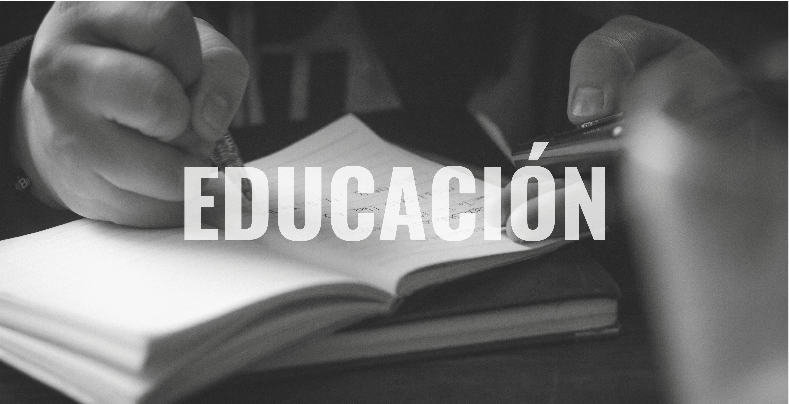
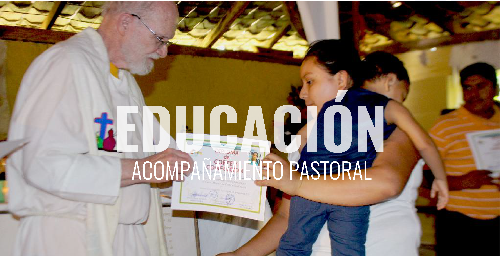

El programa de educación se dedica a fortalecer y articular a las Comunidades Eclesciales de Base (CEB) mediante procesos sistemáticos de acompañamiento, sensibilización y formación integral.
Estos procesos incluyen el acompañamiento pastoral inspirado en las primeras comunidades Cristianas y el espíritu renovador del Concilio Vaticano II, así como la conformación y apoyo a las redes juveniles y los colectivos de mujeres empresarias. El arte y la cultura popular se consideran parte esencial de estos procesos liberadores a nivel personal y comunitario.

Es una instancia de formación que enfatiza la misión promordial de construir el Reino de Dios en la Tierra, con fidelidad al proyecto histórico de salvación y liberación propios de la espiritualidad cristiana.
Utiliza como guía los principios, métodos y experiencias adquiridos por las CEB en su caminar y reforzados con la sangre de los mártires.

Fortalece los procesos de formación juvenil y promueve el liderazgo de los jóvenes en los departamentos de Morazán, La Libertad y San Salvador.
Cuenta con un Centro Juvenil en el municipio de Sacacoyo, departamento de La Libertad. Su misión es capacitar, formar, y recrear a la juventud.

Trabaja por el fortalecimiento de los liderazgos locales de las mujeres, los procesos de formación para el desarrollo integral y la recuperación de la memoria histórica, y la promoción de las capacidades organizativas y de desarrollo económico, en el marco de la Economía Solidaria del Cuidado.
Utiliza como guía los principios, métodos y experiencias adquiridos por las CEB en su caminar y reforzados con la sangre de los mártires.